Simplified Code Samples#
This file contains code to perform some fundamental tasks for climate data analysis. I have designed it to be simpler and more bare-bones than the examples in the full tutorial, accomplishing the necessary tasks in as few lines of code as possible. This means the resulting plots may not be as beautiful, as elegantly coded, or as fully customizable, but the code should be easier to understand, modify, and debug.
Import Packages#
import xarray as xr
import pathlib
import cartopy.crs as ccrs
import matplotlib.pyplot as plt
import matplotlib.patches as mpatches
import numpy as np
import warnings
# Ignore a common unnecessary warning
warnings.filterwarnings(
"ignore",
message="invalid value encountered in create_collection",
category=RuntimeWarning
)
Load Dataset from Server#
Connect to server!
Remember that you need to connect to the server before running this code!
To search through the CMIP6 files on the server, go to the following site: http://cmip6.whoi.edu/search/ Note that this site does not include the reanalyses. To browse the reanalysis data, go to the cmip6 folder on your computer > data > ERA5 (atmospheric data and ocean surface data) OR > data > ocean_reanalysis (4D ocean data)
## Specify filepath to CMIP server on your computer
# For Mac
server_path = pathlib.Path("/Volumes/cmip6")
# For Windows
# server_path = pathlib.Path("Z:")
# This might be different for you, check for your specific computer
# Path to the data
path_on_server = pathlib.Path("data/cmip6/CMIP/NCAR/CESM2/historical/r1i1p1f1/Omon/tos/gr/1")
path = server_path / path_on_server
# Get list of files
files = list(path.glob("*.nc"))
# Open dataset using xarray
ds = xr.open_mfdataset(files)
/Users/aschefler/opt/anaconda3/envs/tutorial_env/lib/python3.11/site-packages/xarray/conventions.py:205: SerializationWarning: variable 'tos' has multiple fill values {np.float32(1e+20), np.float64(1e+20)} defined, decoding all values to NaN.
var = coder.decode(var, name=name)
Extract just the variable of interest from the dataset#
data = ds.tos
Take a first look at the data#
data
<xarray.DataArray 'tos' (time: 1980, lat: 180, lon: 360)> Size: 513MB
dask.array<open_dataset-tos, shape=(1980, 180, 360), dtype=float32, chunksize=(1, 180, 360), chunktype=numpy.ndarray>
Coordinates:
* time (time) object 16kB 1850-01-15 13:00:00.000007 ... 2014-12-15 12:...
* lat (lat) float64 1kB -89.5 -88.5 -87.5 -86.5 ... 86.5 87.5 88.5 89.5
* lon (lon) float64 3kB 0.5 1.5 2.5 3.5 4.5 ... 356.5 357.5 358.5 359.5
Attributes: (12/19)
cell_measures: area: areacello
cell_methods: area: mean where sea time: mean
comment: Model data on the 1x1 grid includes values in all cells f...
description: This may differ from "surface temperature" in regions of ...
frequency: mon
id: tos
... ...
time_label: time-mean
time_title: Temporal mean
title: Sea Surface Temperature
type: real
units: degC
variable_id: tos# What are some typical values in this dataset?
data.isel(time=0).sel(lat=10, method='nearest').values
array([ nan, nan, nan, nan, nan, nan,
nan, nan, nan, nan, nan, nan,
nan, nan, nan, nan, nan, nan,
nan, nan, nan, nan, nan, nan,
nan, nan, nan, nan, nan, nan,
nan, nan, nan, nan, nan, nan,
nan, nan, nan, nan, nan, nan,
nan, nan, nan, nan, nan, nan,
nan, nan, nan, 26.382313, 26.578289, 26.527422,
26.42661 , 26.404663, 26.433376, 26.45631 , 26.477928, 26.520796,
26.573238, 26.645615, 26.745466, 26.861673, 26.984446, 27.112825,
27.25479 , 27.422739, 27.65096 , 27.869148, 28.072744, 28.28039 ,
28.503195, 28.712662, 28.844553, 28.858627, nan, nan,
nan, nan, 27.575289, 27.646214, 27.645298, 27.577772,
27.49774 , 27.413876, 27.292408, 27.172295, 27.046486, 26.921682,
26.806082, 26.702219, 26.60519 , 26.502705, 26.375313, 26.197056,
26.089928, 26.235117, nan, nan, 26.249134, 26.382523,
26.336004, 26.125307, nan, nan, nan, 25.340252,
25.222332, 25.205685, 25.352388, 25.783009, 26.249424, 26.212341,
26.142376, 26.161867, 26.235899, 26.318823, 26.368746, 26.370142,
26.316029, 26.111511, 26.084118, 26.695246, 26.994972, 26.918447,
26.773066, 26.696466, 26.664753, 26.601082, 26.593481, 26.676 ,
26.799582, 26.95336 , 27.11472 , 27.274254, 27.427645, 27.5849 ,
27.75928 , 27.898745, 27.98103 , 28.046736, 28.087593, 28.09991 ,
28.093887, 28.07721 , 28.050833, 28.015955, 27.991385, 27.980984,
27.974453, 27.962942, 27.941458, 27.916882, 27.895775, 27.88146 ,
27.876595, 27.88751 , 27.915096, 27.93585 , 27.953465, 27.971188,
27.990263, 28.00919 , 28.0229 , 28.023964, 28.008104, 27.973698,
27.935553, 27.895105, 27.853476, 27.818228, 27.793427, 27.774122,
27.749304, 27.717762, 27.681105, 27.63761 , 27.604216, 27.590519,
27.597206, 27.609428, 27.612476, 27.607302, 27.598225, 27.58435 ,
27.56846 , 27.558788, 27.556711, 27.571299, 27.60773 , 27.660059,
27.711449, 27.745338, 27.75676 , 27.763952, 27.782253, 27.80415 ,
27.820518, 27.824245, 27.814798, 27.79896 , 27.779886, 27.774546,
27.767908, 27.747252, 27.723915, 27.705036, 27.689611, 27.671167,
27.644564, 27.614273, 27.580736, 27.531843, 27.483366, 27.426231,
27.37075 , 27.321003, 27.262798, 27.1758 , 27.082909, 27.010529,
26.937695, 26.83556 , 26.729029, 26.640919, 26.579838, 26.541798,
26.518702, 26.50408 , 26.470814, 26.433905, 26.410217, 26.408255,
26.426193, 26.463608, 26.518715, 26.580675, 26.6314 , 26.672594,
26.703423, 26.747345, 26.793913, 26.829683, 26.852343, 26.86573 ,
26.869764, 26.86452 , 26.84087 , 26.803568, 26.757444, 26.706015,
26.65267 , 26.598864, 26.545345, 26.494501, 26.450535, 26.401 ,
26.362202, 26.349886, 26.39948 , 26.503971, 26.632462, 26.739172,
26.779785, 26.76113 , 26.750961, 26.798712, 26.922857, 27.125738,
27.366652, 27.56855 , 27.652437, 27.60586 , nan, nan,
27.699142, 27.619509, 27.524563, 27.437191, 27.362303, 27.327496,
27.407728, 27.506409, nan, nan, nan, nan,
nan, nan, nan, nan, nan, nan,
nan, nan, nan, 26.502563, 26.504148, 26.369335,
26.379314, 26.63343 , 26.754747, 26.752033, 26.7365 , 26.725458,
26.70943 , 26.673992, 26.610346, 26.517895, 26.402105, 26.26511 ,
26.179703, 26.146894, 26.148172, 26.146538, 26.123196, 26.077602,
26.013113, 25.93136 , 25.82718 , 25.760782, 25.729969, 25.723728,
25.733711, 25.746675, 25.753347, 25.758932, 25.780876, 25.82178 ,
25.844904, 25.876198, 25.919983, 25.960312, 25.994955, 26.034294,
26.089798, 26.175032, 26.270332, 26.388329, 26.72856 , 27.229593,
27.67532 , 27.93286 , 27.990124, 27.904478, nan, nan,
nan, nan, nan, nan, nan, nan,
nan, nan, nan, nan, nan, nan],
dtype=float32)
“Loading” the dataset#
Xarray automatically opens the dataset in chunks, and doesn’t actually load the values until you need them. If you know you will need all the data in the dataset, you may want to load it at the start. But if it’s a big dataset, and you know you will be subsetting or taking an average over one dimension, you may want to wait so you don’t load more than you need. For more information on chunking and parallel computing in xarray, see the following page: https://docs.xarray.dev/en/stable/user-guide/dask.html
# *** OPTIONAL ***
data.load()
# Note: If you don't load now, you will want to run .load() or .compute() later, after you have taken your mean/subset
<xarray.DataArray 'tos' (time: 1980, lat: 180, lon: 360)> Size: 513MB
array([[[ nan, nan, nan, ..., nan,
nan, nan],
[ nan, nan, nan, ..., nan,
nan, nan],
[ nan, nan, nan, ..., nan,
nan, nan],
...,
[-1.8100313, -1.8100518, -1.8100647, ..., -1.8099182,
-1.8099555, -1.809998 ],
[-1.8050151, -1.8050075, -1.8049895, ..., -1.8049663,
-1.804992 , -1.8050089],
[-1.8005803, -1.8005588, -1.8005334, ..., -1.8006624,
-1.8006387, -1.8006104]],
[[ nan, nan, nan, ..., nan,
nan, nan],
[ nan, nan, nan, ..., nan,
nan, nan],
[ nan, nan, nan, ..., nan,
nan, nan],
...
[-1.7614878, -1.7614846, -1.7614725, ..., -1.7614315,
-1.7614512, -1.7614762],
[-1.7567462, -1.756719 , -1.7566823, ..., -1.7567668,
-1.7567681, -1.7567618],
[-1.752961 , -1.7529289, -1.7528929, ..., -1.7530628,
-1.7530322, -1.7529978]],
[[ nan, nan, nan, ..., nan,
nan, nan],
[ nan, nan, nan, ..., nan,
nan, nan],
[ nan, nan, nan, ..., nan,
nan, nan],
...,
[-1.7728076, -1.7727966, -1.7727754, ..., -1.7727689,
-1.7727833, -1.7728027],
[-1.7678865, -1.7678522, -1.767808 , ..., -1.7679257,
-1.7679212, -1.7679087],
[-1.7640058, -1.7639699, -1.7639298, ..., -1.7641156,
-1.7640821, -1.7640452]]], shape=(1980, 180, 360), dtype=float32)
Coordinates:
* time (time) object 16kB 1850-01-15 13:00:00.000007 ... 2014-12-15 12:...
* lat (lat) float64 1kB -89.5 -88.5 -87.5 -86.5 ... 86.5 87.5 88.5 89.5
* lon (lon) float64 3kB 0.5 1.5 2.5 3.5 4.5 ... 356.5 357.5 358.5 359.5
Attributes: (12/19)
cell_measures: area: areacello
cell_methods: area: mean where sea time: mean
comment: Model data on the 1x1 grid includes values in all cells f...
description: This may differ from "surface temperature" in regions of ...
frequency: mon
id: tos
... ...
time_label: time-mean
time_title: Temporal mean
title: Sea Surface Temperature
type: real
units: degC
variable_id: tosCreate a spatial plot#
For more information on using the mapping package Cartopy, read the documentation here: https://cartopy.readthedocs.io/stable/matplotlib/intro.html
# Average over the "time" dimension:
data_spatial = data.mean('time').compute()
# Blank canvas to plot on
fig = plt.figure(figsize=(10,4), dpi=300) # dpi controls the image resolution
# Set up plot axis as a geographic map
ax = plt.axes(projection=ccrs.PlateCarree())
ax.coastlines()
# Might be helpful to set min and max values for the plot. For global SST, try vmin=0, vmax=30.
vmin = None
vmax = None
# Plot the data
data_spatial.plot(ax=ax, vmin=vmin, vmax=vmax, cmap='viridis')
# cmap is the colormap. More colormap options here: https://matplotlib.org/stable/users/explain/colors/colormaps.html
# Or can use a colormap from the cmocean package: https://matplotlib.org/cmocean/
# Add lat/lon gridlines
gl = ax.gridlines(crs=ccrs.PlateCarree(), alpha=0.5) # alpha is a useful parameter - controls transparency/opacity
gl.bottom_labels = True
gl.left_labels = True
# OPTIONAL: save the figure on your computer
# fig.savefig("FILE_NAME.png")
plt.show()
Creating the plot more manually, instead of automatically with Xarray. Allows for more customization#
# Blank canvas to plot on
fig = plt.figure(figsize=(10,4), dpi=300) # dpi controls the image resolution
# Set up plot axis as a geographic map
ax = plt.axes(projection=ccrs.PlateCarree())
ax.coastlines()
# Might be helpful to set min and max values for the plot. For global SST, try vmin=0, vmax=30.
vmin = None
vmax = None
# Plot the data
pc = ax.pcolormesh(data_spatial.lon, data_spatial.lat, data_spatial, vmin=vmin, vmax=vmax, cmap='viridis')
# Add a colorbar
cbar = plt.colorbar(pc, label='Sea Surface Temperature (°C)', pad=0.03)
# Add lat/lon gridlines
gl = ax.gridlines(crs=ccrs.PlateCarree(), alpha=0.5) # alpha is a useful parameter - controls transparency/opacity
gl.bottom_labels = True
gl.left_labels = True
# OPTIONAL: save the figure on your computer
# fig.savefig("FILE_NAME.png")
plt.show()
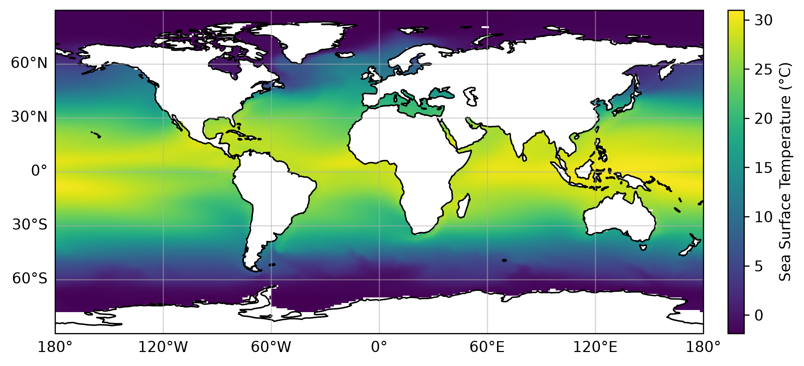
Contour Plot#
# Blank canvas to plot on
fig = plt.figure(figsize=(10,4), dpi=300) # dpi controls the image resolution
# Set up plot axis as a geographic map
ax = plt.axes(projection=ccrs.PlateCarree())
ax.coastlines()
# Plot the data
data_spatial.plot.contourf(ax=ax, levels=20, cmap='viridis', vmin=0)
# Add lat/lon gridlines
gl = ax.gridlines(crs=ccrs.PlateCarree(), alpha=0.5) # alpha is a useful parameter - controls transparency/opacity
gl.bottom_labels = True
gl.left_labels = True
# OPTIONAL: save the figure on your computer
# fig.savefig("FILE_NAME.png")
plt.show()
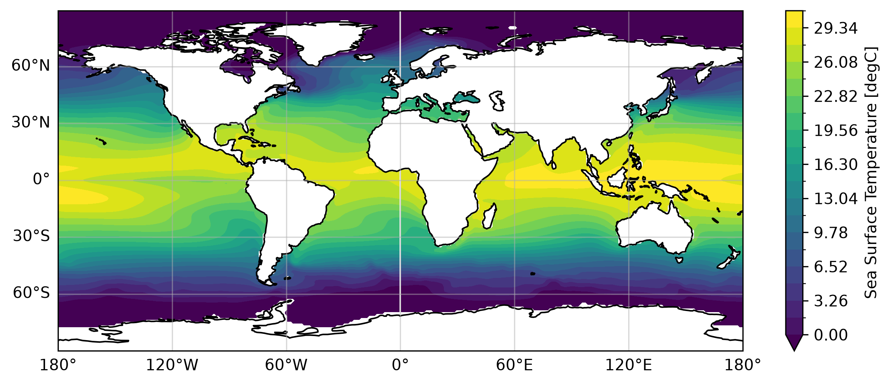
Select a subset of a dataset#
# Select a geographic region. As an example, I'll look at the tropical Indian Ocean
lat_bounds = [-30, 30]
lon_bounds = [30, 120]
data_subset = data.sel(lon=slice(lon_bounds[0], lon_bounds[1]), lat=slice(lat_bounds[0], lat_bounds[1]))
Visualize your selection#
# Showing region with a box
# Blank canvas to plot on
fig = plt.figure(figsize=(10,4), dpi=300) # dpi controls the image resolution
# Set up plot axis as a geographic map
ax = plt.axes(projection=ccrs.PlateCarree())
ax.coastlines()
# Might be helpful to set min and max values for the plot. For global SST, try vmin=0, vmax=30.
vmin = None
vmax = None
# Plot the data
data_spatial.plot(ax=ax, vmin=vmin, vmax=vmax, cmap='viridis')
# Add lat/lon gridlines
gl = ax.gridlines(crs=ccrs.PlateCarree(), alpha=0.5) # alpha is a useful parameter - controls transparency/opacity
gl.bottom_labels = True
gl.left_labels = True
# Plot a box showing your spatial region of interest
ax.add_patch(
mpatches.Rectangle(
xy=[lon_bounds[0], lat_bounds[0]],
height=lat_bounds[1] - lat_bounds[0],
width=lon_bounds[1] - lon_bounds[0],
transform=ccrs.PlateCarree(),
facecolor="none",
edgecolor="black",
linewidth=2,
)
)
# OPTIONAL: save the figure on your computer
# fig.savefig("FILE_NAME.png")
plt.show()
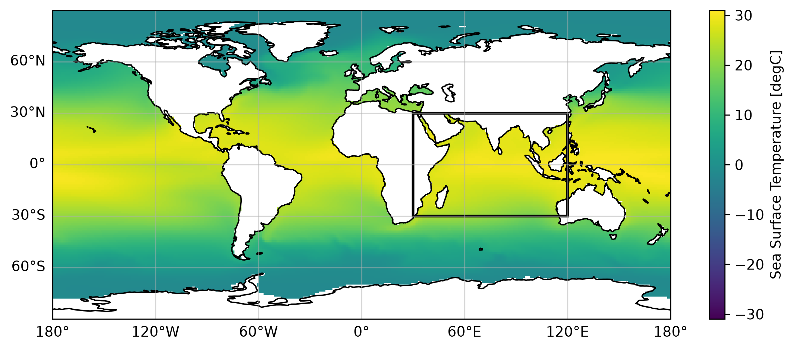
# Zooming in on just that region
# Blank canvas to plot on
fig = plt.figure(figsize=(10,4), dpi=300) # dpi controls the image resolution
# Set up plot axis as a geographic map
ax = plt.axes(projection=ccrs.PlateCarree())
ax.coastlines()
# Plot the spatial subset of the data.
# Note that I customized the levels; change these to fit your variable and region,
# or just delete that parameter to have matplotlib choose automatically.
data_subset.mean('time').plot.contourf(ax=ax, cmap='viridis', levels=np.arange(22,30,0.5))
# Add lat/lon gridlines
gl = ax.gridlines(crs=ccrs.PlateCarree(), alpha=0.5) # alpha is a useful parameter - controls transparency/opacity
gl.bottom_labels = True
gl.left_labels = True
# OPTIONAL: save the figure on your computer
# fig.savefig("FILE_NAME.png")
plt.show()
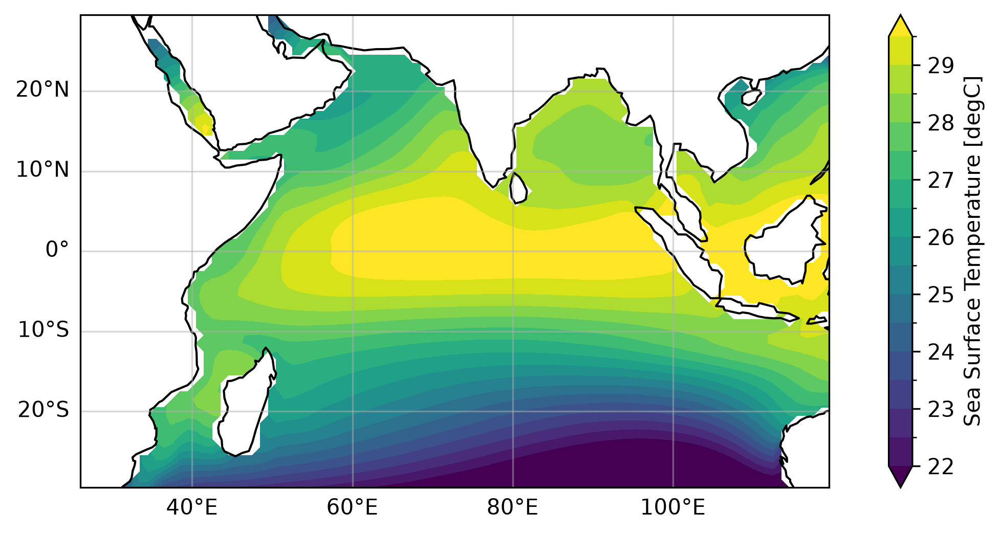
Plot a timeseries#
# Take a spatial mean of your subset of the data
ts = data_subset.mean(dim=('lat','lon'))
# Blank canvas to plot on
fig = plt.figure(figsize=(8,4), dpi=300) # dpi controls the image resolution
# Plot the data
ts.plot()
# OPTIONAL: save the figure on your computer
# fig.savefig("FILE_NAME.png")
plt.show()
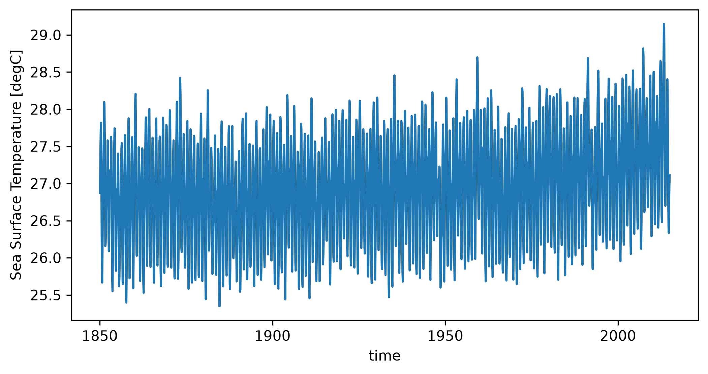
Creating the plot more manually, instead of automatically with Xarray. Allows for more customization#
# Blank canvas to plot on
fig = plt.figure(figsize=(8,4), dpi=300) # dpi controls the image resolution
# Plot the data
plt.plot(ts.time, ts)
# Customize the axes and labels
plt.xlabel('Time', fontsize=12)
plt.ylabel('Sea Surface Temperature (°C)', fontsize=12)
plt.tick_params(labelsize=11)
# OPTIONAL: save the figure on your computer
# fig.savefig("FILE_NAME.png")
plt.show()
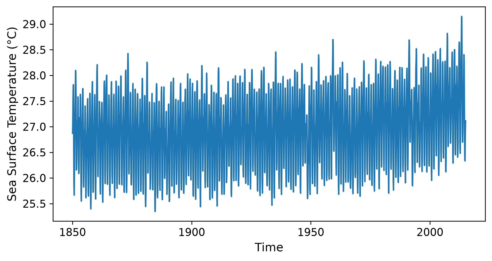
Take an anomaly by removing the monthly climatology#
# Compute the anomaly
ts_anom = ts.groupby('time.month') - ts.groupby('time.month').mean('time')
# Blank canvas to plot on
fig = plt.figure(figsize=(8,4), dpi=300) # dpi controls the image resolution
# Plot the data
ts_anom.plot()
# OPTIONAL: save the figure on your computer
# fig.savefig("FILE_NAME.png")
plt.show()
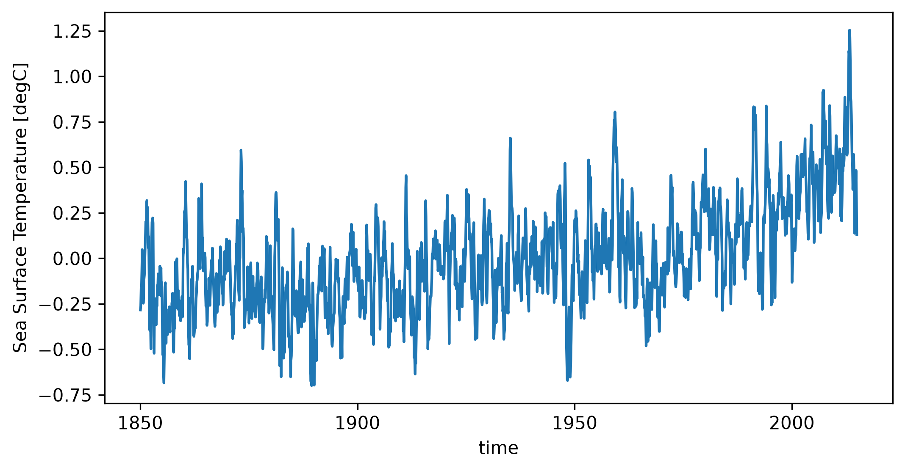
Making multi-panel plots#
# Get global mean temperature anomaly
ts_global = data.mean(dim=('lat','lon'))
ts_global = ts_global.groupby('time.month') - ts_global.groupby('time.month').mean('time')
Timeseries#
# Blank subplot canvas to plot on.
# If you want the subplots to have the same x and/or y axis, can set sharex, sharey = True. They are automatically set to False.
fig, ax = plt.subplots(nrows=2, ncols=1, figsize=(7,6), sharex=True, dpi=300)
# Plot the data
ts_global.plot(ax=ax[0])
ts_anom.plot(ax=ax[1])
# Axis labels
ax[0].set_xlabel(None)
ax[1].set_xlabel('Time')
ax[0].set_ylabel('Global SST anomaly (°C)')
ax[1].set_ylabel('Indian Ocean SST anomaly (°C)')
# OPTIONAL: save the figure on your computer
# fig.savefig("FILE_NAME.png")
plt.show()
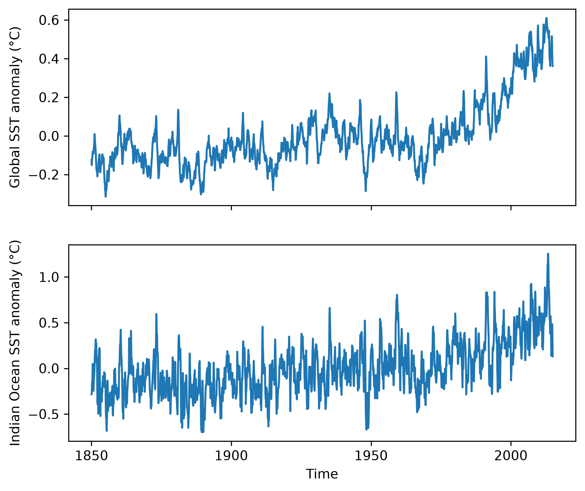
Spatial Subplots#
For more info on multi-panel spatial plots, see this site: https://kpegion.github.io/Pangeo-at-AOES/examples/multi-panel-cartopy.html
# Set up the subplots figure. For mapping, include: subplot_kw={'projection': ccrs.PlateCarree()}
fig, ax = plt.subplots(nrows=2, ncols=2, figsize=(6.5,4), dpi=300, layout='constrained', subplot_kw={'projection': ccrs.PlateCarree()})
ax_1d = ax.flatten()
# This for loop structure with "enumerate" is very useful.
# For each step in the for loop, it gives you both the item (season) and its corresponding index (idx)
for idx, season in enumerate(data_subset.groupby('time.season')):
# Xarray's groupby('time.season') feature gives you both the season name and the data for that season
season_name = season[0]
season_data = season[1]
# Plot the data
pc = ax_1d[idx].contourf(season_data.lon, season_data.lat, season_data.mean('time'), levels = np.arange(22, 31, 0.5), extend='both')
# Note: important that all the subplots have the same levels, so they can share a colorbar
ax_1d[idx].set_title(season_name)
# Draw the coastlines
for axis in ax_1d:
axis.coastlines()
# Make colorbar
cbar = fig.colorbar(pc, ax=ax, orientation='vertical', label='Sea Surface Temperature (°C)', extend='both')
# OPTIONAL: save the figure on your computer
# fig.savefig("FILE_NAME.png")
plt.show()
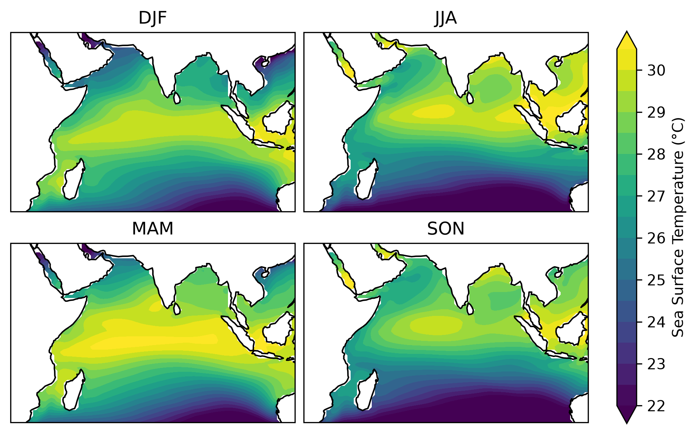
Plot Multiple Lines on Same Plot#
# Blank canvas to plot on
fig = plt.figure(figsize=(7,3.5), dpi=300) # dpi controls the image resolution
# Plot the data
ts_anom.plot(label='Indian Ocean SST anomaly')
ts_global.plot(label='Global Mean SST anomaly')
# Add a legend
plt.legend()
# OPTIONAL: save the figure on your computer
# fig.savefig("FILE_NAME.png")
plt.show()
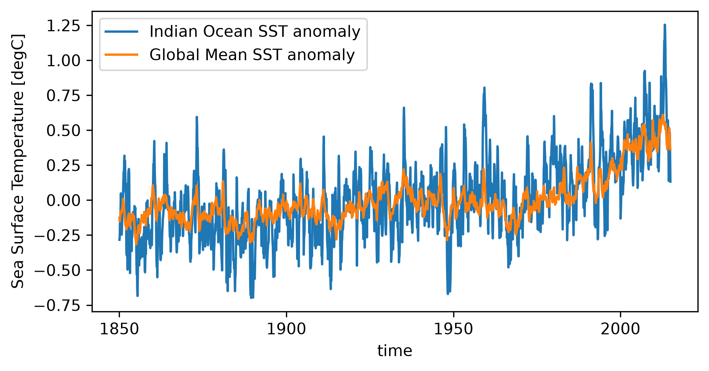
Fit a Curve / Trend to Data#
# Linear fit (degree = 1)
linear_fit = ts_anom.polyfit(dim='time', deg=1)
trend_line = xr.polyval(data['time'], linear_fit.polyfit_coefficients)
# Quadratic fit (degree = 2)
quad_fit = ts_anom.polyfit(dim='time', deg=2)
quad_curve = xr.polyval(ts_anom['time'], quad_fit.polyfit_coefficients)
# Blank canvas to plot on
fig = plt.figure(figsize=(7,4), dpi=300) # dpi controls the image resolution
# Plot the data
ts_anom.plot()
# Plot the linear and quadratic fits
trend_line.plot(linewidth=2, label='Linear Fit')
quad_curve.plot(color='tab:red', linewidth=2, label='Quadratic Fit')
# Y axis label
plt.ylabel('SST Anomaly (°C)')
# Add legend
plt.legend()
# OPTIONAL: save the figure on your computer
# fig.savefig("FILE_NAME.png")
plt.show()
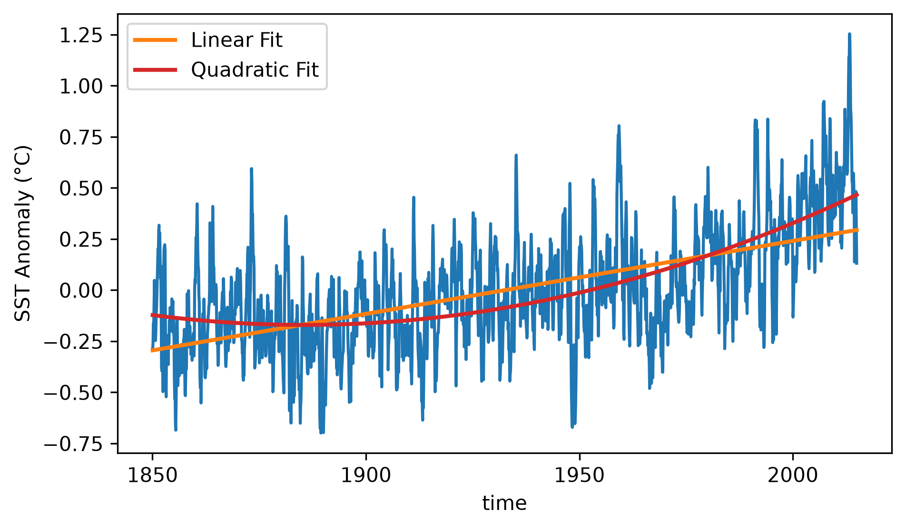
# Print trend, converting units from °C per nanosecond to °C per century
slope = linear_fit.polyfit_coefficients.sel(degree=1).item()
ns_per_day = 8.64e+13
trend_newunits = slope*ns_per_day*365.25*100
print('Trend: ' + str(round(trend_newunits, 2)) + ' °C per century')
Trend: 0.36 °C per century
Plot a Trend Spatially#
# Get trend over time dimension as a function of lat and lon
spatial_trend = data_subset.polyfit(dim='time', deg=1).polyfit_coefficients.sel(degree=1)
# Convert units to °C per century
spatial_trend = spatial_trend*ns_per_day*365.25*100
# Blank canvas to plot on
fig = plt.figure(figsize=(10,4), dpi=300) # dpi controls the image resolution
# Set up plot axis as a geographic map
ax = plt.axes(projection=ccrs.PlateCarree())
ax.coastlines()
# Plot the spatial subset of the data.
# Note that I customized the levels; change these to fit your variable and region,
# or just delete that parameter to have matplotlib choose automatically.
cp = ax.contourf(spatial_trend.lon, spatial_trend.lat, spatial_trend, levels=np.arange(-0.52, 0.53, 0.02), cmap='RdBu_r')
# Add lat/lon gridlines
gl = ax.gridlines(crs=ccrs.PlateCarree(), alpha=0.5) # alpha is a useful parameter - controls transparency/opacity
gl.bottom_labels = True
gl.left_labels = True
# Add colorbar
cbar = plt.colorbar(cp, label='SST trend (°C per century)')
# OPTIONAL: save the figure on your computer
# fig.savefig("FILE_NAME.png")
plt.show()
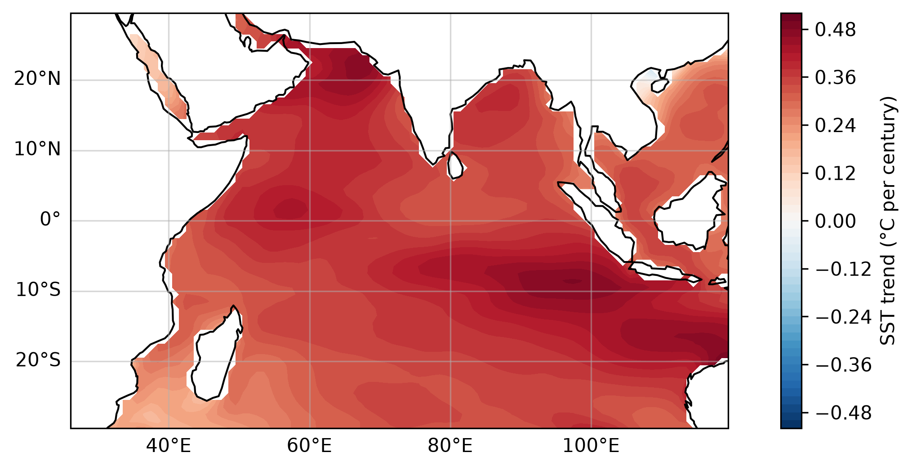
Other Types of Plots#
# Histogram
# Blank canvas to plot on
fig = plt.figure(figsize=(7,4), dpi=300) # dpi controls the image resolution
# Plot the data
ts_anom.plot.hist()
# OPTIONAL: save the figure on your computer
# fig.savefig("FILE_NAME.png")
plt.show()
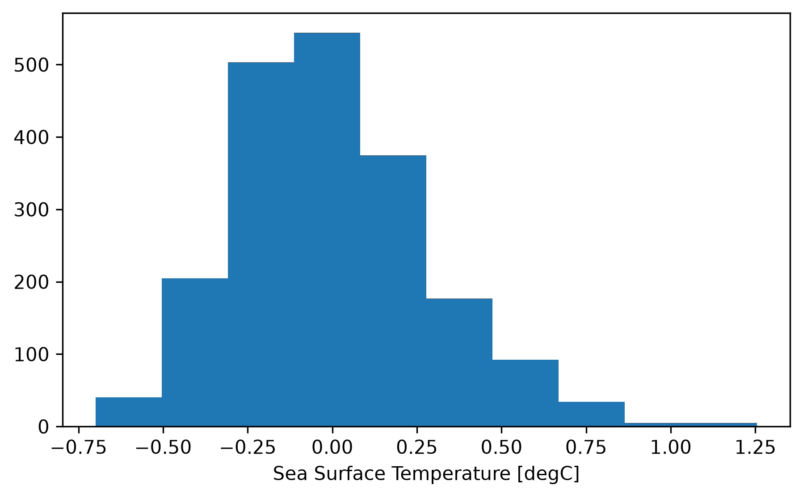
Download an Xarray dataset as a NetCDF File#
# Uncomment below to download.
# # Download to your current folder
# data.to_netcdf('FILE_NAME.nc')
# # Download to a different folder
# path = '/path/to/folder/'
# data.to_netcdf(path + 'FILE_NAME.nc')